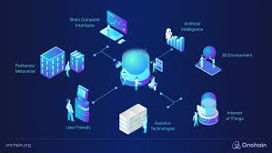

Web 4.0 is the next conceptual generation of the World Wide Web, envisioned as an intelligent, symbiotic web where machines and humans interact seamlessly. It integrates Artificial Intelligence, the Internet of Things (IoT), and ambient computing to create a web that anticipates and responds to user needs proactively.
Web 4.0 goes beyond users interacting with the web — the web interacts back. Using AI, connected devices, and real-time data, Web 4.0 systems learn user behaviour and preferences to deliver highly personalized experiences automatically. Smart homes, wearable technology, voice assistants, and autonomous systems are early examples of Web 4.0 in action. The web becomes embedded in everyday physical environments rather than being confined to a screen.
Web 4.0 represents a fundamental shift from a web we use to a web that works alongside us as an intelligent partner. It has the potential to revolutionize healthcare, education, transport, and industry by making systems smarter, faster, and more responsive to human needs. While still largely conceptual, the building blocks of Web 4.0 are already being developed and deployed around the world today.